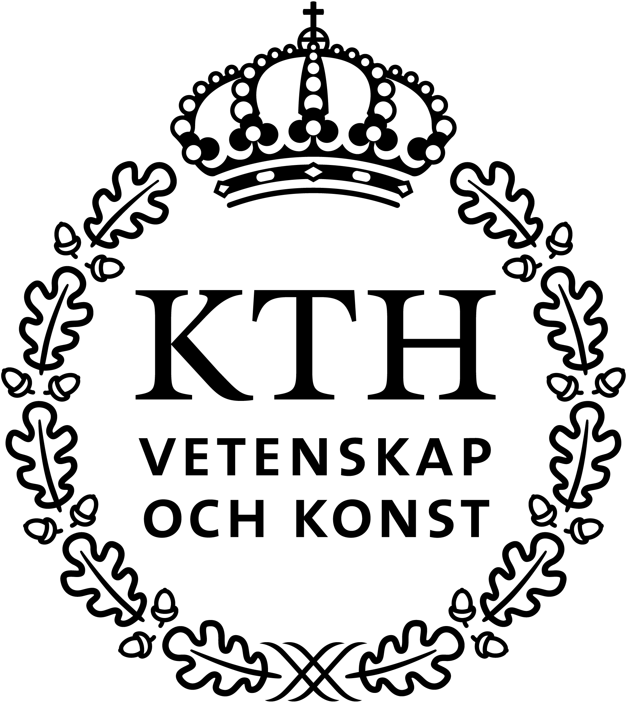

An Evidence Generation Tool for Medical Devices in Sweden
The purpose of this tool is to support evidence generation for medical devices and technologies by providing information on the process and assessment criteria for health technology assessment (HTA) in the Swedish system. The process map for evidence generation (the tool) is based on identified hurdles, enablers, information and online resources, this based on an extensive mapping of the Swedish HTA landscape and interviews with experts and stakeholders from academia, healthcare, MedTech companies and HTA organisations.
The tool is aimed at smaller medical technology companies, start-ups, and medical technology innovators in academia and healthcare and can be used for information searching, ideation, planning and communication of clinical evidence generation.
Collaborating Partners and Funding
This material was developed through a collaboration between KTH Royal Institute of Technology1, Danderyd Hospital2, Karolinska Institute3, and Swedish Medtech4, by Adam Darwich1, Bertil Guve1, Suzanne Palmcrantz2,3 and Malin Hollmark4. We would like to acknowledge and thank all the experts and stakeholders that have provided input and feedback throughout the development.
This project was funded by Medtech4Health, Vinnova's Strategic Innovation Programme. A comprehensive list of tools developed in the project can be found at MedTech Arena.

About the Tool
Purpose of the tool. To support evidence generation for medical devices by providing information on the Swedish health technology assessment (HTA) process, hurdles and enablers, supplementary information and online resources.
Envisioned Users. Smaller medical technology companies and start-ups, and medical technology innovators in academia and healthcare, acting on the Swedish market.
Added Value. Potential users have said that the added benefit of tool is: providing educational information on HTA is Sweden, providing a framework for planning evidence generation projects, and communicating progress to collaborators during clinical evidence generation projects.
What the Tool Is. The tool is a collection of informaton material and progress tracking centred around a model for evidence evaluation and generation for medical devices in the context of the Swedish HTA system.
How to Use. The tool can be used for information searching, ideation and planning of evidence generation in the context of HTA. For more information, see the User Guide.
Development. The tool was developed based on an extensive mapping exercise of the Swedish HTA system. This included the review of published regional HTA reports in Sweden, discussions, feedback and evaluation together with relevant experts and stakeholders.
User Guide
The Evidence Generation tool is a collection of information material on health technology assessment (HTA) and evidence generation for medical devices, based on the Swedish system. All the information is linked through the central process scheme in the main pdf-document (see the figure below, a higher resolution pdf is provided in the Tool). You can download the main pdf-document, share the file internally in your project group and return to the online resources on this website when necessary.
The user starts at the process map on page, one of the pdf, at the yellow diamond shape in the upper left corner and continues through the questions on the current state of evidence for the medical device in question (grey boxes on the left side). Clicking the information icons (i) redirects the user to additional information and web resources on evidence evaluation, and the form where the user can mark their progress.
In the case of insufficient evidence, the user is redirected to the right side of the diagram, evidence generation (orange boxes). Here the user will find more information on a number of steps related to evidence generation for medical devices. These steps are meant to address the most common hurdles and challenges based discussions with experts. At the stage were novel evidence has been generated for a medical device, the user restart the process from
Figure. An overview of the evidence generation tool diagram.
Figure. Example view of the information page, accessed by clicking the Information Icons (i) in the main diagram. Here you will find the form to track progress and take notes, additional information and links to web resources.
Apart from the main pdf-document with the tool, the following resources are also provided:
Database. Searchable summary information from the 66 analysed Swedish Regional HTA reports.
The HTA System. A map of the the key actors in the Swedish HTA system, with information and external links.
HTA Aspects. Includes maps on measurements of outcome and the apsects beyond clinical effect and safety, considered during HTA. This based on over 60 analysed Swedish HTA reports.
HTA Process. A process description on initation, execution and delivery of HTA in Sweden is found by clicking the link of the final step in the process scheme (the green circle) in the pdf-document.
How to Get Started
Step 1, Familiarising yourself with the model. Download the pdf version of the tool, by clicking the Tool icon in the top navigation bar. Familiarise yourself with the model on the first page of the document by following the process flow of the model (from start here, to the green and orange circles). Click the information icons (i) to find more information on the specific topics given in the model. You can try out the form by selecting activities as completed, adding notes, and reviewing overall progress on the first page.
Step 2, Additional Resources. The top navigation bar provides additional resources, you can review these by following the links: Database, The HTA System, and HTA Aspects. The Database allows you to search for summary information on over 60 Swedish Regional HTA Reports. The HTA Systems map gives information on actors in the Swedish HTA system. And, HTA Aspects allows you to explore potential additional measurements of outcome to gain knowledge on health economics, organisation and patient ethics in your studies.
Step 3, Using the Tool. You are now ready to start using the material for your own innovation projects.